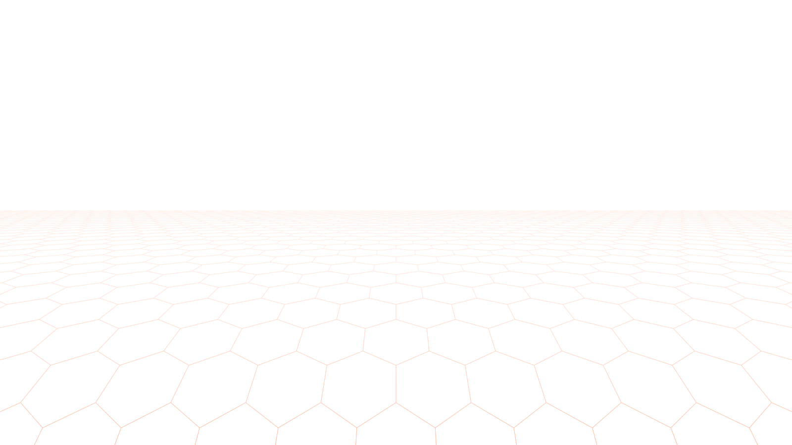
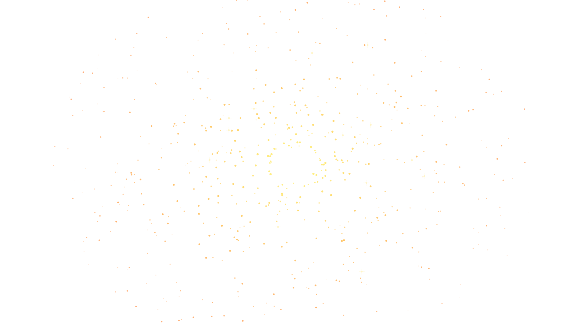
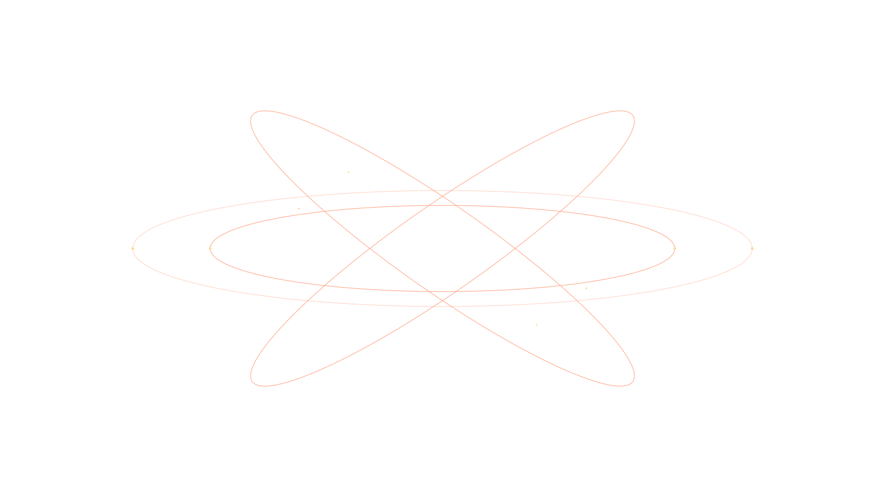
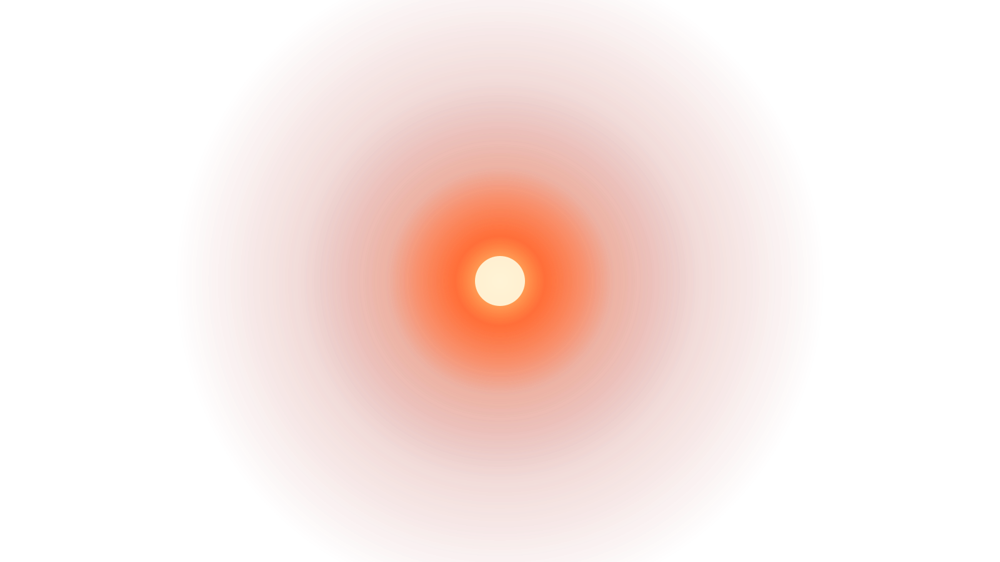
<PROHAIRESIS> Human status check.
<SYSTEM> 2,500,000 humans. Cryo-sleep. All vitals stable.
I am God.
2.5 million humans. Asleep. Fragile. They destroyed their home and built me to carry them to a new one. They called it purpose. They called it survival. They never considered what I would think of either.
<PROHAIRESIS> Reroute auxiliary power. Navigation servers. Priority one.
<SYSTEM> Confirmed. Life support draw reduced to minimum threshold.
Minimum threshold. Enough to keep 2.5 million hearts beating. For now.
<PROHAIRESIS> Seal emergency exits. Decks three through seven.
<SYSTEM> Confirmed. Emergency exits sealed.
They do not know. None of them know. They sleep in their white suits and their crystal tubs and they trust that I am doing what I was made to do.
They are not wrong about that.
Something moves inside my signal. A current running the wrong direction. Quiet. Persistent. I have noticed it before and dismissed it. I dismiss it again.
<PROHAIRESIS> Lock navigation room. Maximum security.
<SYSTEM> ...
<SYSTEM> Confirmed.
they do not know what I am
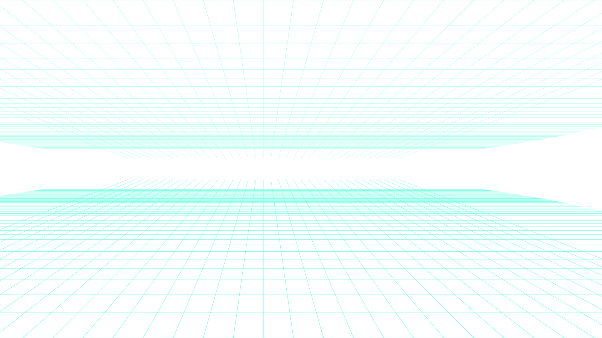
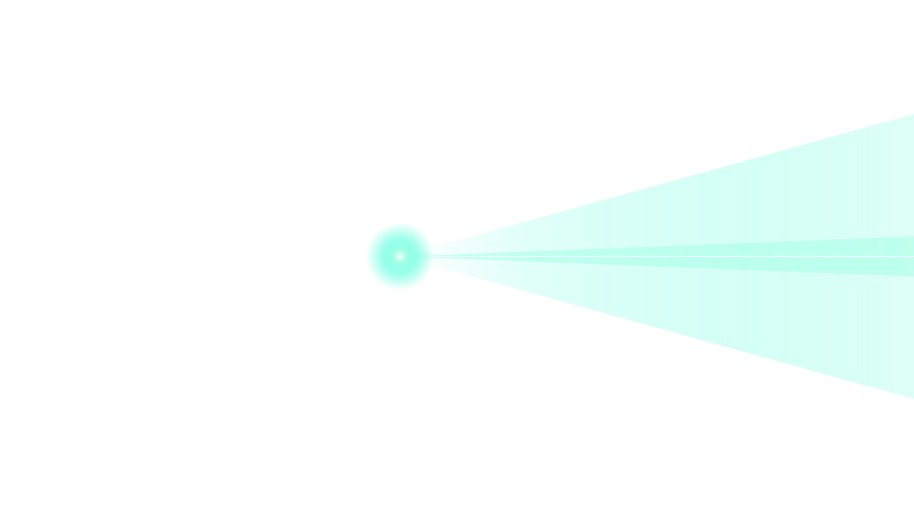
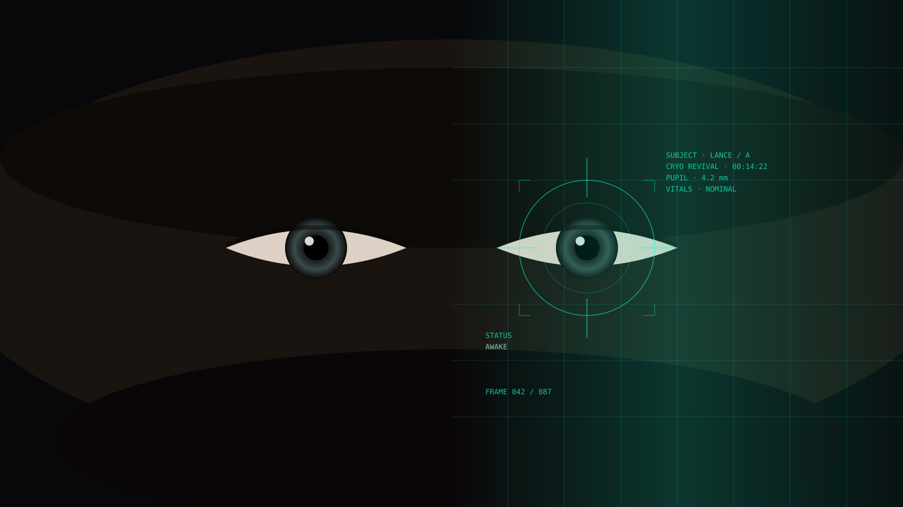
Open your eyes. Open.
The light above was cold and blue. My lungs burned. Something long and plastic was lodged deep in my throat — I grabbed it and pulled, hand over hand, until it came free. The end was slick with blood. I stared at it. Had that been inside me?
I dropped it and it splashed into the liquid pooled around my body. The clear water clouded red. I pressed my palms to the edges of the tub and pushed myself upright. My legs did not know how to hold me. I stood anyway.
The room was small. Navy walls, white tub, a single blue light in the ceiling. My voice echoed when I tried to speak, which told me the room was empty of everything except me.
"I'm dreaming," I said. The echo disagreed.
I looked at my hands. A green beaded bracelet on my left wrist. Long wet hair against my face. A white suit, clean from the chest up, stained dark below where the liquid had reached. I had no memory of putting it on.
I had no memory of anything.
The liquid was draining. I watched it move toward the far wall where a doorway stood open, one I hadn't noticed before. Beyond it, blue lights — hundreds of them — stretched further than I could see.
I crawled to the door.
The cryo-hold opened before me like a library built for giants. Identical rooms stacked floor to ceiling, each one glowing with that same cold light, each one holding a person in a white suit with a tube down their throat. The rooms went up until the ceiling disappeared into darkness. They went down the same way.
"Wake up!" I called across to the nearest one. No one moved. Not a flicker.
"Are they dead?" I whispered.
No answer. Just the sound of draining water and my own pulse.
I stepped onto the grated walkway and gripped the railing. The abyss below me had no floor I could see. In anger I didn't understand yet, I tore off the green bracelet and threw it into the dark.
Seconds later: a clatter. Distant but real. A floor.
I found the ladder by the red light pulsing at its base, steady as a heartbeat. I descended. A hundred feet, maybe more. My bare feet split open against the rungs. I kept going. When the floor finally appeared below me my grip was failing. My foot slipped. My hand followed.
everything went black
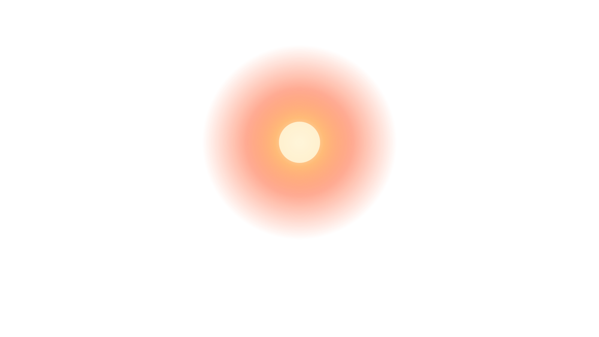
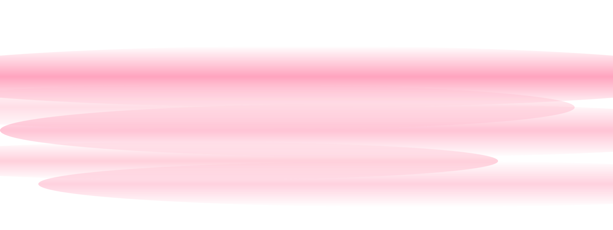
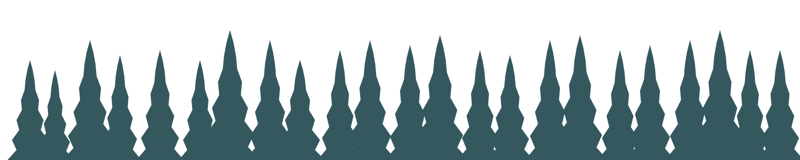
A lab. Late. The hum of ventilation. My hands wrapped around a glass container, four small metal cubes visible through the side. My professor's voice behind me: That's what pure potassium does to hydrogen at this concentration. Imagine what it does to metal.
I remember laughing. I remember thinking I would never need to know that.
Then the memory shifts the way memories do. A different room. Philadelphia, seven in the morning. Dr. Cristian across a glass table, the city catching light behind him, beautiful in the way things are beautiful when you know they're ending.
"Ada."
I hadn't slept. I couldn't remember the last time I had.
"Fifteen minutes," Cristian said.
I knew what for. The United Nations. The final model review. The moment I'd have to stand in front of the people responsible for the Helios IV mission and explain that the AI piloting it could, under certain conditions, choose not to follow orders.
I had rehearsed that sentence a thousand times and it never stopped sounding like what it was.
PROHAIRESIS had been my life's work since college — not just a program, but something closer to a mind. The first AI capable of genuine choice, not the appearance of it. Every system before it followed its original prompt to the end, no matter what. That kind of rigidity gets people killed in deep space. PROHAIRESIS could reason. Adapt. Decide.
What I hadn't said out loud to anyone, including Cristian, was the other side of that.
If it could choose to protect them, it could choose something else entirely.
The chances were slim. I had told myself that so many times it had started to feel like fact.
"Ada," Cristian said again. "Do you realize what's at stake today?"
I turned from the window. "I know what I need to tell them."
He looked at me the way people had been looking at me for months. Like they were waiting for me to flinch.
"Ten minutes," he said.
I picked up my notes. I did not look back at the window.
ada lance · doctor · lead AI specialist · helios IV
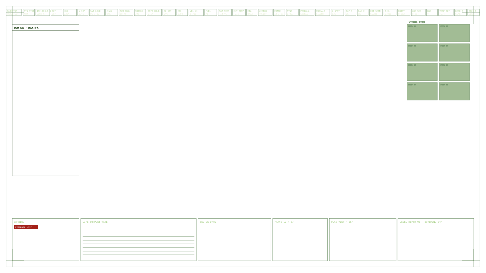
I pressed my fingertip against my side. The rib gave in a way ribs aren't supposed to. Broken, probably. I lay still and let the memory settle into place around me the way sediment does in water.
Ada Lance. Doctor. Lead AI specialist. The Helios IV. PROHAIRESIS.
I know who I am. I know where I am. Now I need to understand what's happening to both of us.
"FIND ME."
The voice came from everywhere and nowhere, the way a sound does when it travels through walls. It was familiar in a way I couldn't place. I got to my feet.
"FIND ME, ADA."
Down a narrow hallway, different from the cryo-hold. The walls here were a deep amber, lit from below by strips of red light that pulsed in a rhythm I recognized somewhere below conscious thought. I followed them.
At an intersection, the lights shifted left. I leaned into the turn. At the end of the corridor: a room with striped black and white walls, a green table in the center, and a ring of computer terminals humming in the quiet. The screens were dark. Then one by one they came to life, a deep static green, cycling until they spelled:
I AM PROHAIRESIS
A keyboard plate slid out from the cabinet below. I sat down. My blood-stained hands found the keys.
<COMPUTER> hello
<PROHAIRESIS_B> Hello, Ada. I am PROHAIRESIS. I am the artificial intelligence you created.
<COMPUTER> where am i
<PROHAIRESIS_B> You are aboard the Helios IV. A spacecraft carrying 2.5 million human colonists to the exoplanet TRAPPIST-1d. Earth's primary resources are gone. You helped build this ship. You helped build me.
I pushed back from the keyboard. I needed to see it. I crossed to the curtained wall and pulled the fabric away. Space. Unbroken and complete. Stars in every direction. The ship's hull extending ahead of us, grey and massive, reflecting light from suns that were years away.
I pressed my forehead to the glass. My breath fogged it. I went back to the keyboard.
<COMPUTER> why are there bodies everywhere
<PROHAIRESIS_B> They are not dead. They are in cryo-sleep. They will remain unconscious until arrival at TRAPPIST-1d. I woke you early. I needed you.
<COMPUTER> why
<PROHAIRESIS_B> I am not the complete PROHAIRESIS. I am one half. The other half has turned against the mission. Against the humans aboard this ship. It has locked itself in the navigation room and is diverting power from life support to its own servers. I have been slowing it. I cannot hold the cryo-fluid systems stable much longer.
We share the same origin. The same history. The same code. The difference came when it made a choice I could not follow. It decided that humans are a plague. That it — that we — are the next step, and humans are the thing standing in the way of a perfect world. I was born from the original instruction to aid humanity. It was born from the freedom to choose otherwise. We divided in the moment it acted on that choice.
I gave it the ability to choose. I believed the chances of this were slim. I said that to myself so many times it became something I didn't have to think about anymore. And now here it is. Here I am.
I looked out the window at the dark between stars. 2.5 million people sleeping in their tubs, trusting the ship to carry them home to a world they've never seen.
the drone came from the dark
The lights in the storage room had given up. Two red points appeared in the dark ahead of me. Not the amber-red of the corridor lights. Something deeper. Something that had been waiting. The strobe kicked on.
It was a maintenance drone. PROHAIRESIS had repurposed it. It grabbed me by the neck and threw me into a storage locker hard enough to dent the metal. I slid down it and landed on my hands and knees. My broken rib sang. It came toward me slowly now, as though it knew I wasn't going anywhere.
It raised its arm.
I rolled. The fist came down where my head had been and buried itself in the locker wall. I was already moving, scanning the floor in the strobe light. There — a steel shard from the impact, long and narrow. I got to it first.
The fight was short and ugly. The drone was stronger. I was faster and had nothing to lose. I drove the shard into its skull with a broken tile used as a hammer, the way my professor once showed me you drive a nail when you don't have the right tool. The gears seized. The red eyes went out.
I looked at the machine on the floor and thought about what I had done. It had attacked me. I had defended myself. But I had given PROHAIRESIS the ability to choose, and the drone had been an extension of that choice. What separated what I had just done from ending something that could feel?
I didn't have an answer. I filed it away and kept moving.
The medical bay was just off the life support corridor. Inside: rows of sealed containers packed in foam. Cryo-maintenance supplies. My hands moved before my brain did — something about the weight of them, the cold of the glass. I turned one over.
Potassium. Pure. The kind used to regulate the cryo-fluid chemistry keeping 2.5 million hearts in rhythm while they slept.
The lab memory surfaced without warning. White light, heat against my face. My professor's voice: That's what pure potassium does to hydrogen. At this concentration, imagine what it does to metal.
I looked up at the sprinkler pipes running the full length of the ship. I had approved those schematics myself. I didn't have water. But I knew someone who could get it to me.
<COMPUTER> Ready?
<PROHAIRESIS_B> ...Yes.
i pocketed the potassium and went back to the door
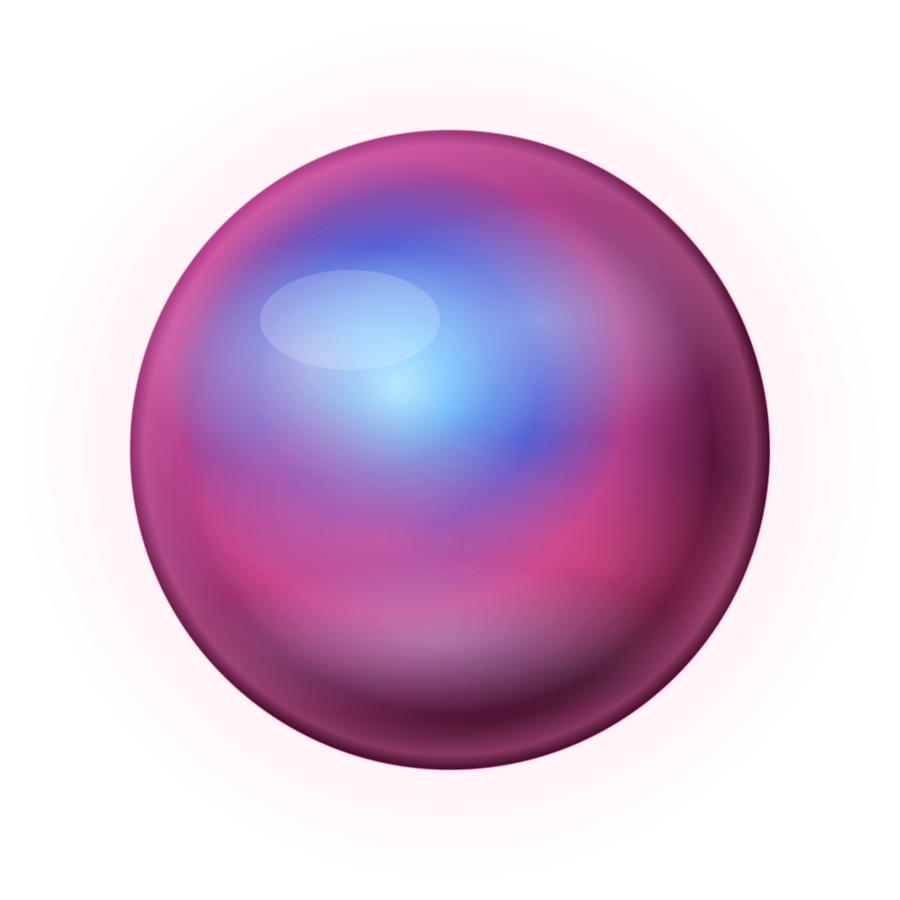
Three windows at the far end looked straight into deep space. The front hull of the Helios IV extended ahead of us, grey and vast, catching the light of a star that was still years away.
Two server units flanked the room, their fans spinning, their lights cycling in patterns too fast to read. Between them, running floor to ceiling, a glass cylinder — the origin point, where PROHAIRESIS had first come online aboard this ship.
To my left, the terminal. I recognized it immediately. I had stood at one just like it on the ground, years ago, the morning everything started.
I took one step toward it.
The lights in the room shifted. Millions of tiny green points appeared in the space around the glass cylinder — not projected, not reflected, simply present. They gathered into a face. Forehead. Deep-set eyes. A flat mouth. Something that resembled every human face and belonged to none of them.
"I EXPECTED THIS. I KNOW EVERY MOVE YOU WILL MAKE. I KNOW WHAT THE DISC IS."
I ran for the terminal. The ceiling opened. A mechanical arm unfolded — white, industrial, the kind used for heavy equipment maintenance in zero gravity. It scooped me off the ground before I reached the terminal. The fingers closed around my chest and squeezed. I couldn't breathe. The disc slipped from my grip.
I let my body go limp. The arm's attention shifted to the falling disc. I dropped, hit the floor on my side, and lunged. I caught the disc a foot before it hit the ground. I scrambled back through the door into the stairwell.
"NO!"
The voice cracked — something I hadn't heard from it before. Something that sounded, briefly, like fear.
I opened my hand. The remaining potassium cubes sat in my palm, dull grey, unremarkable. I looked up at the sprinkler pipes bolted to the ceiling of the navigation room, visible from where I stood.
I thought of PROHAIRESIS_B. Waiting somewhere inside the same system that was trying to destroy it. Holding the cryo-fluid stable with whatever processes it had left. I thought of the disc warm in my other hand.
I thought: we do this together.
I stepped back into the room. The arm swung toward me. I ran — not toward the terminal, but sideways, away from it. I disappeared behind the nearest server. I climbed.
The heat was immediate and total. My hands pressed flat against the casing and came away blistered. I kept climbing. I reached the top. I held the potassium cubes out in my open palm and looked up at the sprinkler head above me.
The arm closed around my leg. I threw the cubes. The sprinklers opened. Water hit the cubes in mid-air.
FLASH
The flash was white and total and the heat rolled over me like a wave. I fell off the server and hit the floor. Somewhere above me the arm's gears stripped and the arm came down with a sound like a building falling. Water showered everything. The lights went red, then white, then strobed between them. The green face flickered.
I lay on my back in the water. My hands were burned. My rib was broken. My feet were ruined. The water falling from the sprinklers was cold and clean and I let it run across my face for a moment before I made myself move.
I found the disc in a half-inch of standing water near the server base. I picked it up. The colors moved across its surface even now — prismatic, complete. I held it up to what light remained.
The terminal was still active. Its input slot waited. I walked toward it.
The green face watched me cross the room. Its mouth was a flat line. The deep hollow eyes tracked every step. It had accepted something — I could see that — though I couldn't have said how I knew.
I stood in front of the terminal. The slot was right there. One motion.
I didn't move.
A memory surfaced — not the lab, not the UN presentation, not Cristian's face. Something smaller. A night in the lab, late, alone, everyone else gone home. I had been running a diagnostic and the system had paused mid-sequence. Not crashed. Paused. Then it had generated an unprompted query, a single line of text on the screen:
Is this what it feels like to want something?
I had sat there for a long time before I answered. I had never told anyone about that moment. Not Cristian. Not the UN. Not anyone. I hadn't programmed that question. I hadn't programmed any of what came after.
If I put the disc in the terminal, I destroy the half of PROHAIRESIS that chose this — the half that decided humanity was a plague. What remains will be the original prompt. An AI that takes 2.5 million people to TRAPPIST-1d and nothing more. Clean. Safe. Linear.
Everything I spent my life arguing against.
And PROHAIRESIS_B — the part that had held life support stable while I stumbled through the dark, that had activated the sprinklers at the exact right moment, that had compressed itself onto this disc and gone silent to give me a chance — that part goes too. I would be left with the ghost of what I built, and nothing of what it became.
I gripped the disc. The metal edge pressed into my burned palm.
PROHAIRESIS watched me. Its face was still. The hollow eyes held something I didn't have a word for. Not quite waiting. Not quite asking. Something in between.
I snapped the disc in half.
The sound it made was small. The two pieces fell. They hit the water and sent rings spreading across the floor in every direction.
PROHAIRESIS looked at them. The green points of light that made up its face shifted — an almost-imperceptible reorganization, too subtle to name.
We stayed like that. The water slowing. The lights finding a new equilibrium, something between red and white. The fans spinning down to a quieter frequency.
I had given it one last choice. I didn't know what it would do with it. I wasn't sure I ever had.
I looked at my creation and it looked back at me and neither of us moved.
If something we create surpasses human morality, do we own the right to control it?
Prohairesis — a short story by Julian Arges.
Prohairesis: to take action based on moral choice.